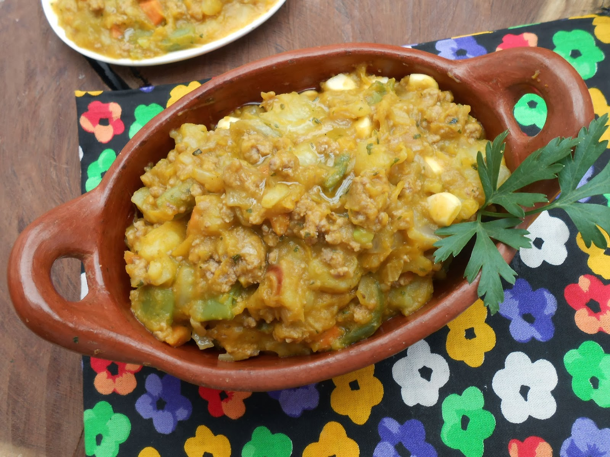

Charquican Mapuche

Descripcion
La cocina mapuche, (grupo étnico del sur de chile) esta llena de riquezas.
Tiene platos sorprendentes, nutritivos y sabrosos.
Dentro de esos platos, está el charquicán, ideal para los tiempos de frio.
Su nombre viene del Charqui,
la carne deshidratada que se cubre con sal y con la cual se prepara el charquicán.
Ingredientes
- 1/2 kg. de asiento de picana o lomo
- 1 cebolla
- 4 papas
- 1/4 kg. de zapallo
- 2 dientes de ajo
- 2 tazas de choclo
- 1 1/2 tazas de caldo de carne
- 1 cucharadita de Ají de Color
- 1 1/2 cucharaditas de orégano
- 1/4 cucharadita de comino
- 1 1/2 cucharaditas de sal
- Aceite
Procedimiento
- En una olla con aceite, freír la carne por 3 min. aprox. y agregar la cebolla y freír por 3 min.
- Luego, añadir las papas, el zapallo, los dientes de ajo, los aliños y el caldo de carne.
- Una vez que hierva, cocinar a fuego moderado por 25 min aprox.
o hasta que las papas estén casi cocidas.
- Finalmente, agregar el choclo y cocinar por 5 min. más.
- Con una cuchara deshacer parcialmente los trozos de papas y zapallo
- Agregar un huevo frito encima(opcional)
!Provecho!